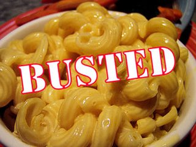

{kind=link}

This is a brief chapter that will clarify some typical mistakes and misinterpretations of Italian cuisine all around the world. - We're skipping the famous Pasta Alfredo as we covered it previously. - The Italian soda is definitely something that has been made up in the States. - The American "Italian dressing" is another myth to bust. The original Italian dressing is simply extra-virgin olive oil, vinegar, salt and pepper. You'll find all of these ingredients on the tables of every Italian restaurant, so that anybody can make his/her own dressing. - In Italy peperoni (yes, with one 'p') means peppers, while salame piccante means pepperoni. - Italians do not use lots of garlic (especially garlic powder on the pizza) as is commonly thought in the USA. Italians do use garlic alright, but in reasonable proportions. - Last but not least: you won’t find macaroni and cheese anywhere in Italy. What you’ll find is maccheroni which is one of the hundreds of types of (short) pasta. Want to learn more about the real Italian culture? Then check out our eBook filled with tips and pictures brought to you by your favorite Italian insiders.